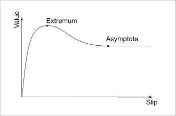

UDN
Search public documentation:
VehiclesTechnicalGuide
日本語訳
中国翻译
한국어
Interested in the Unreal Engine?
Visit the Unreal Technology site.
Looking for jobs and company info?
Check out the Epic games site.
Questions about support via UDN?
Contact the UDN Staff
中国翻译
한국어
Interested in the Unreal Engine?
Visit the Unreal Technology site.
Looking for jobs and company info?
Check out the Epic games site.
Questions about support via UDN?
Contact the UDN Staff
UE3 Home > Gameplay Programming > Vehicle System Technical Guide
Vehicle System Technical Guide
Overview
Vehicle Classes
Vehicle
This is the base class for all vehicles. It contains the basic control inputs Steering, Throttle and Rise, as well as the stubs for much of the AI code that is used to allow computer players to drive vehicles. It also includes the code used for getting in and out of vehicles. You would probably want to subclass this to create something like a fixed turret.+
Vehicle Properties (click to view)
AI
- bTurnInPlace - If true, tells the AI that this vehicle can turn in place.
- bSeparateTurretFocus - If true, tells the AI the vehicle has a turret-type weapon which aims separately from the direction the vehicle faces.
- bFollowLookDir - If true, tells the AI that the vehicle's rotation follows the camera's rotation.
- bHasHandbrake - If true, tells the AI that the vehicle can hand brake. Used for steering the vehicle.
- bScriptedRise - If true, tells the AI that the vehicle hovers. Used when stuck or when a destination is reached.
- bDuckObstacles - If true, tells the AI to check for and duck under obstacles.
- bAvoidReversing - If true, tells the AI to avoid using reverse unless it absolutely has to.
- bRetryPathfindingWithDriver - if true, tells the AI to continue on foot if pathfinding in the vehicle fails.
- DriverDamageMult - Multiplier for damage incurred by the driver while in the vehicle.
- MomentumMult - Multiplier for momentum applied by damage to the vehicle.
- CrushedDamageType - DamageType to use when the vehicle crushes something.
- MinCrushSpeed - Minimum speed the vehicle must be moving to crush something.
- ForceCrushPenetration - Maximum penetration allowed before crushing something regardless of speed.
- ViewPitchMin - Inherited from Pawn. The minimum pitch rotation the vehicle's camera is allowed to have.
- ViewPitchMax - Inherited from Pawn. The maximum pitch rotation the vehicle's camera is allowed to have.
- Driver - References the Pawn driving this vehicle.
- bDriving - If true, the vehicle has a driver
- ExitPositions - Array of locations relative to the vehicle to attempt to place players when they exit the vehicle. If none are specified, an optional automatic placement system is used.
- ExitRadius - Distance from the vehicle's location the player should be placed on exit when using the automatic placement system; attempts to place the player this distance forward, backward, to the left, and to the right of the vehicle.
- ExitOffset - Additional offset to use when placing players on exit.
- bDriverIsVisible - If true, the driver of the vehicle is rendered.
- bAttachDriver - If true, the driver is attach to the vehicle when entering.
- Mesh - Inherited from Pawn. The SkeletalMeshComponent representing the visual component of the vehicle.
- Steering - A value between -1 and 1 representing the direction the player is steering the vehicle left or right. By default, this is the result of pressing the A and D keys.
- Throttle - A value between -1 and 1 representing the forward and backward input from the player. By default, this is the result of the W and S keys.
- Rise - A value between -1 and 1 representing the up and down input from the player. By default, this is the result of the Spacebar and C keys.
- bIgnoreStallZ - If true, the vehicle can continue to rise to altitudes above the specified StallZ value in the World Properties for the level.
+
Vehicle Functions (click to view)
AI
- GetMaxRiseForce - Returns the maximum rise force of the vehicle.
- GetTargetLocation [RequestedBy] [bRequestAlternateLoc] - Returns the best location to target when aiming at the vehicle.
- RequestedBy - Optional. References the Actor targeting the vehicle.
- bRequestAlternateLoc - Optional. If true, returns a secondary location if there are multiple. Not used in this implementation.
- ContinueOnFoot - Forces the driver out of the vehicle, if the driver is AI, and returns whether the driver left the vehicle. Called from the pathfinding code when the path can only be continued on foot.
- EncroachingOn [Other] - Called by the engine when the vehicle encroaches on, or overlaps, the spcified Actor and the Actor could not be pushed out of the way.
- Other - References the Actor the vehicle is encroaching upon.
- PancakeOther [Other] - Called by EncroachingOn() to deal large amounts of damage in order to crush the specified Pawn.
- Other - References the Pawn to crush.
- TakeRadiusDamage [InstigatedBy] [BaseDamage] [DamageRadius] [DamageType] [Momentum] [HurtOrigin] [bFullDamage] [DamageCauser] [DamageFallowExponent] - Applies damage to the vehicle and driver scaled based on the distance of the vehicle from the specified origin for the damage.
- InstigatedBy - References the controller responsible for doing the damage.
- BaseDamage - Holds the maximum amount of damage to be applied at the origin.
- DamageRadius - Holds the maximum distance from the origin to do damage; scaled between the origin and this distance.
- DamageType - Holds the type of damage to do.
- Momentum - Holds the amount of momentum to impart on the vehicle.
- HurtOrigin - Holds the origin of the damage to apply. Full damage is done at this location.
- bFullDamage - If true, damage is not scaled based on distance from the origin. Full damage is done throughout the radius.
- DamageCauser - References the Actor responsible for doing the damage.
- DamageFalloffExponent - Holds the exponent of the falloff for the damage over the radius. Defaults to 1.0 for linear falloff.
- DamageRadiusDamage [DamageAmount] [DamageRadius] [EventInstigator] [DamageType] [Momentum] [HitLocation] [DamageCauser] [DamageFalloffExponent] - Determines if damage done to the vehicle should damage the driver as well and calls TakeRadiusDamage() on the Driver if so.
- DamageAmount - Holds the maximum amount of damage to be applied at the origin.
- DamageRadius - Hold the maximum distance from the origin to do damage; scaled between the origin and this distance.
- EventInstigator - References the controller responsible for doing the damage.
- DamageType - Holds the type of damage to be done.
- Momentum - Holds the momentum to impart on the driver.
- HitLocation - Holds the origin of the damage to apply. Full damage is done throughout the radius.
- DamageCauser - References the Actor responsible for doing the damage.
- DamageFalloffExponent - Holds the exponent of the falloff for the damage over the radius. Defaults to 1.0 for linear falloff.
- Destroy - Called by engine when the vehicle is destroyed.
- Destroyed_HandleDriver - Called when the vehicle is destroyed to handle cleanup of the driver.
- TakeDamage [Damage] [EventInstigator] [HitLocation] [Momentum] [DamageType] [HitInfo] [DamageCauser] - Inherited from parent. Applies damage to the vehicle. Uses DamageType vehicle scaling values to adjust the incoming damage amount.
- Damage - Holds the amount of damage to be done.
- EventInstigator - References the controller responsible for doing the damage.
- HitLocation - Holds the location where the damage was done. * Momentum - Holds the momentum to impart on the vehicle.
- DamageType - Holds the type of damage to be done.
- HitInfo - Holds information about the hit that caused the damage.
- DamageCauser - References the Actor that caused the damage.
- AdjustDriverDamage [Damage] [InstigatedBy] [HitLocation] [Momentum] [DamageType] - Adjusts an incoming damage amount for being applied to a driver. Called from the driver's Pawn class when taking damage.
- Damage - Holds the original amount of damage to be done.
- InstigatedBy - References the controller responsible for the damage.
- HitLocation - Holds the location of the hit that caused the damage.
- Momentum - Holds the momentum to impart on the driver.
- DamageType - Holds the type of damage to be done.
- DriverDied [DamageType] - Handles cleanup of the Driver and Controller when the driver of the vehicle dies while inside of the vehicle.
- DamageType - Holds the type of damage that caused the driver's death.
- NotifyDriverTakeHit [InstigatedBy] [HitLocation] [Damage] [DamageType] [Momentum] -
- GetDefaultCameraMode [RequestedBy] - Returns the default camera mode to use when the player is in the vehicle.
- RequestedBy - References the controller requesting the camera mode, most likely the vehicle's controller.
- CanEnterVehicle [P] - Returns whether the given Pawn can enter this vehicle, e.g. if there are any available seats, the Pawn has a controller, the Pawn isn't already driving another vehicle, etc.
- P - References the Pawn to try to place in the vehicle.
- AnyAvailableSeat - Returns whether there are any available seats in the vehicle.
- TryToDrive [P] - Returns whether the given Pawn successfully becomes the driver of the vehicle.
- P - References the Pawn to become the driver.
- DriverEnter [P] - Places the given Pawn as the driver of the vehicle unless the Pawn is dead and returns whether it was successful. The driver's controller becomes the vehicle's controller here.
- P - References the Pawn to enter the vehicle.
- AttachDriver [P] - Hard attaches the driver to the vehicle and hides the driver if bDriverIsVisible is false. Called from the Pawn class by the driver in StartDriving(). Only executes if bAttachDriver is true. Called on all clients.
- P - References the driver to attach.
- DetachDriver [P] - Function stub for detaching the current driver from the vehicle. Called from the Pawn class by the driver in StopDriving(). Called on all clients.
- GetExitRotation [C] - Returns the rotation to use when placing the driver on exit.
- C - References the controller of the driver.
- DriverLeave [bForceLeave] - Called from the PlayerController when the player wishes to exit the vehicle. Detaches the driver from the vehicle, places the driver in the world, and returns the driver to being possessed by the controller.
- bForceLeave - If true, the driver will be forced out of the vehicle even if no suitable location to place the driver can be found. Places the driver at the GetTargetLocation() of the vehicle.
- DriverLeft - Clears the Driver and sets bDriving to false.
- PlaceExitingDriver [ExitingDriver] - Attempts to find a suitable location to place the driver when exiting the vehicle and returns whether it was successful or not.
- ExitingDriver - Optional. References the driver exiting the vehicle. Current Driver is used if not specified.
- FindAutoExit [ExitingDriver] - Attempts to find an exit location in front, behind, to the right, or to the left of the vehicle and returns whether it was successful.
- ExitingDriver - References the driver exiting the vehicle.
- TryExitPos [ExitingDriver] [ExitPos] [bMustFindGround] - Tests each individual exit location generated by FindAutoExit() and returns whether the driver can be placed in that location.
- ExitingDriver - References the driver exiting the vehicle.
- ExitPos - Holds the exit position to be tested.
- bMustFindGround - If true, the trace to find the floor must hit something for the test to succeed.
- GetEntryLocation - Returns the entry location for the vehicle. Defaults to the vehicle's location.
- SetInputs [InForward] [InSrafe] [InUp] - Provides an interface for manually setting the Rise, Steering, and Throttle values of the vehicle.
- InForward - Holds the new Throttle value for the vehicle.
- InStrafe - Holds the new Steering value for the vehicle.
- InUp - Holds the new Rise value for the vehicle.
- SetDriving [b] - Sets the driving status, bDriving, of the vehicle.
- b - Holds the new driving status of the vehicle.
- DrivingStatusChanged - Called when the driving status is changed allowing you to perform any necessary actions. Defaults to zeroing out Rise, Steering, and Throttle.
- ZeroMovementVariables - Zeroes out the values of Rise, Steering, and Throttle.
SVehicle
The SVehicle class introduces rigid-body physics-based movement into the vehicle system. It contains all the parameters for supporting wheeled vehicles and makes use of a generic simulation object for creating different types of vehicles: wheeled, flying, hovering, treaded, etc.+
SVehicle Properties (click to view)
Damage
- RadialImpulseScaling - Holds the amount to scale impulses imparted on the vehicle by damage done through the HurtRadius() function.
- BaseOffset - The base Vector offset for the camera's location.
- CamDist - Distance to offset the camera from the base location along the camera's local X-axis.
- DriverViewPitch - Holds the driver's pitch used for LookToSteer.
- DriverViewYaw - Holds the driver's yaw used for LookToSteer.
- SimObj - The SVehicleSimBase object that handles much of the vehicle simulation. For more information, see the SVehicleSimBase section.
- Wheels - The array of SVehicleWheel objects, holding parameters for each wheel (in the case of a wheeled vehicle).
- COMOffset - Center Of Mass location of the vehicle, in local space.
- InertiaTensorMultiplier - This scales the inertia tensor for the vehicle. This affects how easy the vehicle is to spin around each axis, it's the angular equivalent of mass.
- MaxSpeed - Maximum speed the vehicle at which will be allowed to travel.
- MaxAngularVelocity - Maximum angular velocity the vehicle is allowed to achieve.
- bUseSuspensionAxis - If TRUE, then the wheel contact with the ground will always have its normal point back along the suspension axis. If FALSE, the wheel contact will use the surface normal of the ground it hits.
- HeavySuspensionShiftPercentage - Percent of the maximum allowed distance the Suspension must want to move in one go for the SuspensionHeavyShift() function to be called
- bStayUpright - Use the stay-upright world constraint.
- StayUprightRollResistAngle - Angle at which the vehicle will resist rolling.
- StayUprightPitchResistAngle - Angle at which the vehicle will resist pitching.
- StayUprightStiffness - Stiffness of upright spring past the limit angles.
- StayUprightDamping - Damping of upright spring past the limit angles.
- bCanFlip - True if vehicle can be uprighted by player.
- UprightLiftStrength - Scales the lifting force applied to the vehicle during uprighting.
- UprightTorqueStrength - Scales the torque applied to the vehicle during uprighting.
- UprightTime - Time in seconds to apply uprighting force/torque.
- bVehicleOnGround - True if any SVehicleWheel is currently touching the ground (ignores contacts with chassis etc).
- TimeOffGround - Time that bVehicleOnGround has been false for.
- bVehicleOnWater - True if any SVehicleWheel is currently touching water
- bIsInverted - True if vehicle is mostly upside down.
- bChassisTouchingGround - True if there are any contacts between the chassis of the vehicle and the ground.
- bWasChassisTouchingGroundLastTick - True if there were any contacts between the chassis of the vehicle and the ground last tick.
- EngineSound - AudioCompnent for the ambient engine-running sound. Pitch is modulated based on the RPMs.
- SquealSound - AudioComponent for the wheel squealing sound. Volume is modulated based on amount of squealing.
- CollisionSound - SoundCue to play when the vehicle collides with other objects.
- EnterVehicleSound - SoundCue to play when the driver enters the vehicle.
- ExitVehicleSound - SoundCue to play when the driver exits the vehicle.
- CollisionIntervalSeconds - Minimum number of seconds that must pass between collisions before the CollisionSound can be played again.
- SquealThreshold - Slip velocity cuttoff below which no wheel squealing is heard.
- SquealLatThreshold - Lateral Slip velocity cut off below which no wheel squealing is heard.
- LatAngleVolumeMult - Multiplier for volume level of Lateral squeals relative to straight slip squeals.
- EngineStartOffsetSecs - Number of seconds delay between the engine startup sound and beginning the engine idling sound.
- EngineStopOffsetSecs - Number of seconds delay between the playing of the engine shutdown sound and the deactivation of the engine idling sound.
+
SVehicle Functions (click to view)
Display
- CalcCamera [fDeltaTime] [out_CamLoc] [out_CamRot] [out_FOV] - Inherited from Pawn. Calculates the viewpoint for the camera for players in this vehicle.
- fDeltaTime - Amount of time since the last update.
- out_CamLoc - Holds current camera position and outputs new camera position.
- out_CamRot - Holds current camera rotation and outputs new camera rotation.
- out_FOV - Holds current field of view and outputs new field of view.
- TurnOff - Inherited from Pawn. Shuts down sounds, animations, physics, etc.
- AddForce [Force] - Applies a constant force using the specified vector.
- Force - Vector representing both the direction and strength of the force to apply..
- AddImpulse [Impulse] - Applies a single impulse force using the specified vector.
- Impulse - Vector representing both the direction and strength of the impulse to apply.
- AddTorque [Torque] - Applies torque (turning force) using the specified vector.
- Torque - Vector representing both the direction and strength of the torque to apply.
- AddVelocity [NewVelocity] [DamageType] [HitInfo] - Inherited from Pawn. Adds the specified velocity to the vehicle. Overriding the Pawn version is necessary here since rigid-body physics is in use.
- IsSleeping - Returns whether the physics simulation controlling the vehicle's physics is asleep.
- HasWheelsOnGround - Returns whether the vehicle has any wheels currently in contact with the ground.
- SuspensionHeavyShift [Delta] - Called by the engine when the suspension of the vehicle moves a large amount.
- Delta - Holds the amount of the shift.
- PostTeleport [OutTeleporter] - Called after the vehicle has been teleported to update position, etc.
- OutTeleporter - References the teleporter at the destination.
- SetWheelCollision [WheelNum] [bCollision] - Turns the collision of a particular wheel of the vehicle on or off.
- WheelNum - Index of the wheel in the Wheels array to modify collision for.
- bCollision - If true, enable collision on the wheel. Otherwise, disable collision.
- RigidBodyCollision [HitComponent] [OtherComponent] [RigidCollisionData] [ContactIndex] - Called by the engine when the rigid body of the vehicle collides with another object. Plays the CollisionSound SoundCue.
- HitComponent - References the component of the vehicle that was collided with.
- OtherComponent - References the component of the other object that was collided with.
- RigidCollisionData - Holds data about the collision.
- ContactIndex - Holds the index of the collision contact point.
- PostInitAnimtree [SkelComp] - Called by the engine after the AnimTree has been initialized. Obtains and sets the references to the SkelControlWheel controllers in the vehicle's AnimTree, if the vehicle has wheels.
- SkelComp - References the SkeletalMeshComponent whose AnimTree was initialized.
- InitVehicleRagdoll [RagdollMesh] [RagdollPhysAsset] [ActorMove] [bClearAnimtree] - Transitions the vehicle from using a single-body for physics to using a full, articulated, ragdoll-like skeleton.
- RagdollMesh - The new skeletal mesh containing the full skeleton to use.
- RagdollPhysAsset - The physics asset for the new skeletal mesh.
- ActorMove - A vector used to translate the vehicle during the transition. Can be used to avoid the ragdoll mesh penetrating into the ground.
- bClearAnimtree - If true, clear the reference to the current AnimTree for the vehicle.
- StopVehicleSounds - Called from TurnOff(). Stops playing engine and squeal audio components.
- StartEngineSound - Begins playing the engine sound audio component.
- StartEngineSoundTimed - Starts a timer to begin playing the engine sound audio component after EngineStartOffsetSecs seconds.
- StopEngineSound - Stops playing the engine sound audio component.
- StopEngineSoundTimed - Starts a timer to stop playing the engine sound audio component after EngineStartOffsetSecs seconds.
- VehiclePlayEnterSound - Plays the EnterVehicleSound SoundCue and calls StartEngineSoundTimed().
- VehiclePlayExitSound - Plays the ExitVehicleSound and calls StopEngineSoundTimed().
UDKVehicleBase
The UDKVehicleBase class extends from SVehicle and adds basic support for multiple-seat vehicles and carrying game objects, such as flags in vCTF games.+
UDKVehicleBase Properties (click to view)
Entry/Exit
- bShouldEject - If true, the driver will be ejected when exiting the vehicle. Should be set when the current driver should be ejected.
+
UDKVehicleBase Functions (click to view)
AI
- NeedToTurn [Targ] - Inherited from Pawn. Returns whether the AI needs to turn in order to face/fire at the specified location.
- Targ - Holds the location to look/fire at.
- SwitchWeapons [NewGroup] - Called by UTPlayerController from SwitchWeapon() exec function to switch the player's current seat location (using the number keys on the keyboard by default).
- NewGroup - Holds the group/seat to switch to. Seat index is NewGroup - 1.
- ServerChangeSeat [RequestedSeat] - Called on server. Function stub for synchronizing seat changes on all clients. Subclasses should override this function.
- RequestedSeat - Holds seat index to switch to.
- AdjacentSeat [Direction] [C] - Called on client. Requests a change to an adjacent seat in the vehicle.
- Direction - Holds the direction to move. -1 means previous seat. 1 means next seat.
- C - References the controller of the player changing seats.
- ServerAdjacentSeat [Direction] [C] - Classed on server. Function stub for moving the player to an adjacent seat. Subclasses should override this function.
- Direction - Holds the direction to move. -1 means previous seat. 1 means next seat.
- C - References the controller of the player changing seats.
- EjectDriver - Ejects the driver from the vehicle at a high velocity. Called by DriverLeft().
- HoldGameObject [GameObj] - Function stub called by engine to attach a GameObject to the vehicle. Subclasses should override this function.
- GameObj - References the GameObject to attach to the vehicle.
UDKVehicle
The UDKVehicle class adds basic support for vehicle weapons as well as introducing the beginnings of a flexible system for playing different animations, particle effects, and sounds. It also has the ability to use morph targets to display location-specific damage. For more information on some of the sub-systems added, see the following sections:- Vehicle Seats and Weapons - Information over adding seats and weapons to vehicles.
- Vehicle Events - Information regarding the vehicle event system.
- Vehicle Damage System - Information over the location-specific damage system.
+
UDKVehicle Properties (click to view)
AI
- ObjectiveGetOutDist - When controlled by AI and an objective needs to be triggered that cannot be triggered by the vehicle itself, the AI will try to get out of the vehicle this distance away.
- bUseAlternatePaths - If true, the AI will consider using its squad's alternate paths to an objective. Vehicle where detours would be painful (slow or other) or vehicles that are strong enough that detouring would be pointless should set this to false.
- BurnOutMaterialInstances - Array of material instances and associated data used to replace the regular materials of the mesh when the vehicle dies and becomes a burning hulk of metal.
- FireDamageThreshold - The ratio of Health / MaxHealth which when reached will cause the vehicle to catch on fire and begin to take continuous damage from the fire.
- FireDamagePerSec - Amount of damage to be done each second when on fire.
- AccruedFireDamage - The amount of fire damage done so far.
- UpsideDownDamagePerSec - The amount of damage to be done each second when the vehicle is upside down and unoccupied.
- OccupiedUpsideDownDamagePerSec - The amount of damage to be done each second when the vehicle is upside down and occupied.
- WaterDamage - The amount of damage to be done each second when the vehicle is submerged.
- bTakeWaterDamageWhileDriving - If true, the vehicle will take water damage when being driven.
- AccumulatedWaterDamage - The amount of water damage done since TakeWaterDamage() was last called to apply the damage.
- DestroyOnPenetrationThreshold - Maximum amount of penetration allowed before destroying the vehicle.
- DestroyOnPenetrationDuration - Maximum amount of time penetration can be over DestroyOnPenetrationThreshold before destroying vehicle.
- KillerController - References the controller responsible for killing the vehicle.
- MinRunOverSpeed - The minimum speed the vehicle must be moving in order to cause damage by running into another player.
- TeamBeaconMaxDist - The maximum distance out that the Team Beacon will be displayed.
- bShowLocked - If true, draw the "No Entry" indicator on the HUD for this vehicle.
- bTeamLocked - If true, only players on the same team as the vehicle may enter.
- ShowLockedMaxDist - The maximum distance from the vehicle to the camera where the locked indicator will be displayed.
- VehicleEffects - Array of VehicleEffect data structs containing information for the various particle effects to use for the vehicle.
- WheelParticleEffects - Array of material specific particle effects applied to all attached UDKVehicleWheels with bUseMaterialSpecificEffects set to true.
- MaxWheelEffectDistSq - Maximum distance off the ground a wheel can be to still play sounds and particle effects.
- GroundEffectIndices - Array of indices into the VehicleEffects array specifying effects to be used as grounnd effects, or effects that are displayed when the vehicle is within a certain distance of the ground.
- MaxGroundEffectDist - The maximum distance the vehicle can be from the ground to display ground effects.
- GroundEffectDistParamName - The name of the parameter in the ground effects' particle systems controlling the intensity of the effect. Will be set with a value between 0.0 and 1.0 which is the result of CurrentGroundDist / MaxGroundEffectDist.
- WaterGroundEffect - ParticleSystem to use for ground effects when the vehicle is over water.
- WaterEffectType - The name of the material type representing water. Used to switch to water ground effects when the current ground material type matches this name.
- ContrailEffectIndices - Array of indices into the VehicleEffects array specifying effects to be used as contrails.
- ContrailColorParamName - The name of the parameter used for setting the color in the contrail particle systems. The value passed to the parameter is based on the speed of the vehicle.
- HoverboardDust - ParticleSystemComponent for playing effects under the hoverboard
- bEjectKilledBodies - If true, when the driver of the vehicle dies it will be ejected and ragdolled. Otherwise, it is destroyed immediately.
- bEjectPassengersWhenFlipped - If true, all passengers including the driver will be ejected if the vehicle flips over.
- Seats - Array of VehicleSeats containing information used to build the various seats and/or weapons available to players in the vehicle. See the Vehicle Seats and Weapons section for more information.
- bAllowedExit - If true, the driver is allowed to leave the vehicle.
- Team - The team this vehicle is currently on.
- VehicleAnims - Array of VehicleAnims containing information about various animations to be played on the vehicle when certain events occur. See the Vehicle Animations section for more information.
- DrivingAnim - The name of the animation to play on the Driver when visible and driving.
- DamageParamScaleLevels - Array mapping damage material parameter names to scaling factors. The parameter value is set by getting the health ratio (CurrentHealth / DefaultHealth) of the current damage morph target. This allows that 0.0 to 1.0 value to be scaled to fit the usage of the parameter in the material.
- DamageSkelControls - Array of damage skeletal controllers in the vehicle's AnimTree.
- DamageMorphTargets - Array of damage morph target data structs used to control the damage system.
- DamageMaterialInstance - References to dynamically created material instances created from the vehicle's materials and applied to the vehicle allowing access to damage parameters
- bNoZDampingInAir - If true, the Z-component of the vehicle's velocity will not have damping applied while the vehicle is in the air.
- bNoZDamping - If true, the Z-component of the vehicle's velocity will not have damping applied even when the vehicle is on the ground.
- bIsDisabled - If true, the vehicle is disabled.
- bJostleWhileDriving - If true, the vehicle will have a random impulse applied to it to simulate realistic hovering. Useful for air vehicles.
- bFloatWhenDriven - If true, the vehicle will use a gravity Z-value of -0.1 to simulate floating. Useful for flying vehicles.
- CustomGravityScaling - Vehicle-specific multiplier for the gravity Z-value allowing for custom gravity on individual vehicles.
- bDisableRepulsorsAtMaxFallSpeed - If true, the vehicle's repulsors will be disabled if the vehicle's negative Z velocity is greater than the Driver's MaxFallSpeed value.
- TireAudioComp - AudioComponent used to play tire sounds.
- TireSoundList - Array of MaterialSoundEffects played from the tires when on different types of materials.
- CurrentTireMaterial - Holds the type of material the tires are currently on.
- ScrapeSound - AudioComponent used to play scraping sounds when the vehicle's body is scraping against another object.
- VehicleSounds - Array of VehicleSound data structs containing SoundCues to play for various events.
- LargeChunkImpactSound - SoundCue to play when the vehicle is impacted with a force of magnitude greater than 20000.
- MediumChunkImpactSound - SoundCue to play when the vehicle is impacted with a force of magnitude greater than 4000.
- SmallChunkImpactSound - SoundCue to play when the vehicle is impacted with a force of magnitude greater than 1000.
- bHomingTarget - If true, this vehicle can be locked onto by homing weapons.
- WeaponRotation - Current rotation of the vehicle's main weapon.
+
UDKVehicle Functions (click to view)
AI
- JumpOutCheck - Function stub called by the engine when the vehicle is descending toward its destination allowing the bot a chance to jump out. Subclasses should override this function.
- OnTouchForcedDirVolume [Vol] - Notifies the vehicle that it has hit a ForcedDirVolume. Returning false in this function will cause the vehicle to ignore the volume.
- Vol - References the ForcedDirvolume that was touched.
- GetRanOverDamageType - Returns the damage type used when running someone over with this vehicle.
- LockOnWarning [IncomingMissile] - Warns the driver of the vehicle a homing projectile is incoming.
- IncomingMissile - References the projectile that is locked on to the vehicle.
- ReceivedHealthChange - Function stub called by the engine when the client receives a change to its health. Subclasses should override this function.
- CheckAutoDestruct [InstigatorTeam] [CheckRadius] - Returns whether the vehicle should auto destruct, i.e. if it is close enough to an enemy or objective.
- InstigatorTeam - TeamInfo of the player who instigated the auto destruct.
- CheckRadius - How close the vehicle must be to something to auto destruct.
- SelfDestruct [ImpactedActor] - Function stub called by the engine when the vehicle should self-destruct. Subclasses should override this function.
- ImpactedActor - References the Actor to take full damage from the self-destruct.
- RBPenetrationDestroy - Destroys the vehicle when a large penetration occurs.
- TakeWaterDamage - Function stub called by the engine every tick when water damage is being taken. Subclasses should override this function.
- TakeFireDamage - Function stub called by the engine when fire damage is being taken. Subclasses should override this function.
- NativePostRenderFor [PC] [Canvas] [CameraPosition] [CameraDir] - Allows the vehicle to draw HUD overlays. Natively draws locked icons.
- PC - References the local player controller.
- Canvas - References the current canvas for drawing.
- CameraPosition - Holds the current location of the player's camera.
- CameraDir - Holds the current direction the player's camera is facing.
- SetHUDLocation [NewHUDLocation] - Sets the location where the icon for the vehicle will be drawn on the HUD.
- NewHUDLocation - Holds the location (X and Y components of the vector) to draw the icon at.
- PlayTakeHitEffects - Function stub called by engine to play hit effects when the vehicle is impacted. Subclasses should override this function.
- UpdateHoverboardDustEffect [DustHeight] - Function stub called by the engine to update the hoverboard dust effects. Subclasses should override this function.
- DustHeight - Holds the height of the hoverboard above the ground.
- GetTeamNum - Returns the team number of this vehicle.
- InUseableRange [PC] [Dist] - Returns whether the vehicle is within range to be used.
- PC - References the player controller trying to use the vehicle.
- Dist - Holds the distance the player is from the vehicle.
- InitDamageSkel - Populates the DamageSkelControls array with the damage skeletal controllers in the vehicle's Animtree.
- UpdateDamageMaterial - Updates any materials applied to the vehicle when the damage system updates a health value.
- ApplyMorphDamage [HitLocation] [Damage] [Momentum] - Applies hit damage to the damage system to modify the morph targets.
- HitLocation - Holds the location where the hit occurred.
- Damage - Holds the amount of damage that was done.
- Momentum - Holds the momentum imparted by the damage.
- MorphTargetDestroyed [MorphNodeIndex] - Function stub called by the engine (as a result of ApplyMorphDamage) when a damage node is destroyed.
- MorphNodeIndex - Holds the index in the DamageMorphTargets array of the node that was destroyed.
- PostInitRigidBody [PrimComp] - Function stub called by the engine after the rigid body simulation is initialized allowing the vehicle to do any custom physics initialization necessary. Subclasses should override this function.
- PrimComp - References the primitive component the RB physics was initialized for.
- SeatWeaponRotation [SeatIndex] [NewRot] [bReadValue] - Gets or sets the weapon rotation for the specified seat.
- SeatIndex - Holds the index of the seat.
- NewRot - Optional. New rotation value to set the seat's weapon rotation to.
- bReadValue - If true, returns the seat's weapon rotation. Otherwise, sets the seat's weapon rotation to NewRot.
- SeatFlashLocation [SeatIndex] [NewLoc] [bReadValue] - Gets or sets the flash location for the specified seat.
- SeatIndex - Holds the index of the seat.
- NewLoc - Optional. New location value to set the seat's flash location to.
- bReadValue - If true, returns the seat's flash location. Otherwise, sets the seat's flash location to NewLoc.
- SeatFlashCount [SeatIndex] [NewCount] [bReadValue] - Gets or sets the flash count for the specified seat.
- SeatIndex - Holds the index of the seat.
- NewCount - Optional. New flash count value to set the seat's flash count to.
- bReadValue - If true, returns the seat's flash count. Otherwise, sets the seat's flash count to NewCount.
- SeatFiringMode [SeatIndex] [NewFireMode] [bReadValue] - Gets or sets the firing mode for the specified seat.
- SeatIndex - Holds the index of the seat.
- NewFireMode - Optional. New firing mode to set the seat's firing mode to.
- bReadValue - If true, returns the seat's firing mode. Otherwise, sets the seat's firing mode to NewFireMode.
- ForceWeaponRotation [SeatIndex] [NewRotation] - Forces the weapon rotation of the specified seat to the new rotation. Used by vehicle factories when spawning the vehicle.
- SeatIndex - Holds the index of the seat.
- NewRotation - New rotation value to set the seat's weapon rotation to.
- GetSeatPivotPoint [SeatIndex] - Returns the pivot point for the specified seat.
- SeatIndex - Holds the index of the seat.
- GetBarrelIndex [SeatIndex] - Returns the index of the barrel currently in use, or being fired out of, for the specified seat.
- SeatIndex - Holds the index of the seat.
UTVehicle
The UTVehicle class implements most of the gameplay-specific functionality for vehicles as well as the majority of the actual implementation of the vehicle event system for playing animations, effects, and sounds. This class also contains a good deal of console-specific functionality for controlling vehicles.+
UTVehicle Properties (click to view)
AI
- bKeyVehicle - If true, this vehicle is considered to be more important by the AI. Also, displays the vehicle on the minimap.
- AIPurpose - Specifies which kind of tasks the AI should use this vehicle for.
- AIP_Offense - The vehicle should only be used for offensive or attacking tasks.
- AIP_Defense - The vehicle should only be used for defensive tasks.
- AIP_Any - The vehicle can be used for any purpose.
- bShouldLeaveForCombat - If true, the Ai will leave this vehicle when they encounter enemies.
- MaxDesireability - Determines how desirable this vehicle is to the AI.
- HornAIRadius - Distance from the vehicle within which the Ai will respond to the horn by trying to enter any available seats in the vehicle.
- Reservation - References the AI that is about to enter the vehicle; keeps multiple AI entities from all trying to enter the same vehicle.
- bShouldAutoCenterViewPitch - If true, the vehicle will be automatically centered in the player's view when in this vehicle.
- SeatCameraScale - A multiplier for the seat-specific camera offsets.
- bRotateCameraUnderVehicle - If true, the camera will be allowed to rotate under the vehicle, potentially obscuring the player's view.
- bNoZSmoothing - If true, the lagged camera will not have its Z-position smoothed resulting in a bumpier-looking ride.
- bLimitCameraZLookingUp - If true, the camera will always stay above the vehicle when looking up to avoid clipping in flying vehicles when going up.
- bNoFollowJumpZ - If true, the Z-position of the camera will not change when the vehicle "jumps" resulting in more dramatic-looking jumps.
- CameraSmoothingFactor - The smoothing scale used to smooth lagged cameras. Higher values result in shorter smoothing times.
- DefaultFOV - The default field of view to use for passengers in this vehicle.
- CameraLag - The amount time to lag the camera.
- LookForwardDist - The distance to bring the camera forward when looking down over the front of the vehicle.
- MinCameraDistSq - The distance (squared) from the camera to the vehicle to begin hiding the vehicle, unless bCameraNeverHidesVehicle is true.
- bCameraNeverHidesVehicle - If true, the vehicle is never hidden regardless of how close the camera gets to the vehicle.
- bStopDeathCamera - If true, stop death camera using old camera position saved upon death.
- bValidLinkTarget - If true, this vehicle can be healed by the Link Gun.
- LinkHealthMult - The amount of healing done by the Link Gun on this vehicle is the Link Gun damage amount multiplied by this value, if greater than 0.
- LinkedToCount - The number of Link Gun currently linked to this vehicle.
- RanOverDamageType - The DamageType used for damage incurred by players that get run over by this vehicle.
- VehicleDrowningDamageType - The DamageType used for damage taken when submerged in water.
- ClientHealth - Client-side health for morph targets in the damage system. Used to adjust everything to the replicated Health whenever it is received.
- ExplosionDamageType - The DamageType to use when doing damage caused by the vehicle exploding.
- ExplosionDamage - The amount of damage done by the vehicle's explosion.
- ExplosionRadius - The radius within which the vehicle's explosion should cause damage.
- ExplosionMomentum - The amount of momentum imparted by the vehicle's explosion.
- ExplosionInAirAngVel - The amount of spin the vehicle is given if it explodes while in the air.
- CollisionDamageMult - A multiplier for damage incurred from collisions with other rigid bodies.
- bReduceFallingCollisionDamage - If true, collision damage is reduced when the vehicle collided with an object below it.
- bHasWeaponBar - If true, the weapon bar for this vehicle will be drawn on the HUD.
- bDrawHealthOnHUD - If true, the vehicle's health will be displayed on the HUD in addition to the driver's health.
- bDriverCastsShadow - If true, the driver's mesh should always cast shadows.
- bDropDetailWhenDriving - If true, the detail of the vehicle will be dropped when the local player is driving this vehicle unless the game is currently in super high detail mode.
- LightEnvironment - The DynamicLightEnvironment used by this vehicle for dynamic shadows.
- TeamBeaconPlayerInfoMaxDist - The maximum distance from the camera the player info will be displayed.
- HUDExtent - A scaling factor used to determine if the crosshair is over the vehicle.
- MapSize - The scale to draw this vehicle's icon on the minimap.
- IconCoords - The coordinates in the icon texture for this vehicle's icon.
- FlipToolTipIconCoords - The coordinates in the icon texture for this vehicle's flip tooltip icon.
- EnterToolTipIconCoords - The coordinates in the icon texture for this vehicle's enter tooltip icon.
- DropFlagIconCoords - The coordinates in the icon texture for this vehicle's drop flag icon.
- DropOrbIconCoords - The coordinates in the icon texture for this vehicle's drop orb icon.
- bPostRenderTraceSucceeded - If true, the last trace check for drawing postrender HUD icons succeeded.
- TeamBeaconOffset - An offset from the vehicle's location used to display info, such as the locked icon.
- PassengerTeamBeaconOffset - An offset from the vehicle's location used to display the passenger's icons.
- HUDIcons - The texture containing the icons to draw on the HUD for this vehicle.
- ExplosionLightClass - The class of light to use for explosion effects.
- MaxExplosionLightDistance - The maximum distance the explosion can be from the camera to create the explosion light.
- bInitializedVehicleEffects - If true, the vehicle effects have been attached.
- DeathExplosion - References the Emitter spawned on death so it can be deactivated when the burnout occurs.
- TimeTilSecondaryVehicleExplosion - The amount of time to wait after the initial vehicle explosion before playing the secondary explosion (assuming it has not already been played because of some other circumstance).
- DamageSmokeThreshold - The health ratio (Health / HealthMax) at which the vehicle will begin playing smoke effects.
- MaxImpactEffectDistance - The maximum distance from the camera where a hit impact will spawn effects.
- MaxFireEffectDistance - The maximum distance from the camera where the vehicle's fire effects will be displayed.
- ExplosionTemplate - The ParticleSystem to play when the vehicle explodes.
- BigExplosionTemplate - An array of ParticleSystems and minimum distances used to play different explosion effects based on the distance the local player is from this vehicle's explosion.
- SecondaryExplosion - The ParticleSystem to play for the vehicle's secondary explosion. Played on a delay after the initial explosion or when a vehicle falls and impacts the ground after its initial explosion.
- BigExplosionSocket - The name of the socket to attach the big explosion to. If 'None', the big explosion will not be attached at all.
- BurnOutTime - The amount of time it takes for the vehicle to burn out.
- BurnTimeParameterName - The name of the material parameter used to control the burn out effects.
- BurnOutMaterial - An array of team-specific materials to use for the burnout mesh.
- DeadVehicleLifeSpan - The amount of time that should pass before the vehicle burns out.
- DelayedBurnoutCount - The number of times the burn out has been delayed.
- bHasTurretExplosion - If true, this vehicle plays a turret explosion sequence upon death.
- TurretScaleControlname - The name of the turret skeletal controller used to scale the turret to 0.
- TurretSocketname - The name of the socket to spawn the explosion effect for the turret blowing up.
- DistanceTurretExplosionTemplate - An array of ParticleSystems and minimum distances used to play different turret explosions based on the local player's distance from the explosion.
- SpawnInTemplate - An array of team-specific ParticleSystems to be played when the vehicle spawns into the world.
- SpawnMaterialLists - An array of team-specific materials to use for the vehicle when it spawns into the world..
- SpawnMaterialParameterName - The name of the material parameter used in the spawn materials.
- SpawnMaterialParameterCurve - Curve information used to control the value of the spawn material parameters.
- SpawnInTime - The amount of time it takes to finish the spawn effect.
- bPlayingSpawnEffect - If true, the spawning effect is currently in progress.
- DisabledTemplate - The ParticleSystem to be played when the vehicle becomes disabled.
- DisabledEffectComponent - The ParticleSystemComponent used to play the disabled effect.
- bEnteringUnlocks - If true, the vehicle will become unlocked when a player enters it.
- bHasCustomEntryRadius - If true, the vehicle should use special entry radius rules (defined in the InCustomEntryRadius() function) to determine if the player can enter.
- bMustBeUpright - If true, the vehicle must be upright in order to be entered.
- bHasBeenDriven - if true, this vehicle has been driven at some time since it was spawned.
- bFindGroundExit - If true, the exit position for passengers leaving the vehicle must be near solid ground.
- bRequestedEntryWithFlag - If true, the player tried to enter the vehicle which doesn't allow flags while holding the flag.
- PassengerPRI - References the PlayerReplicationInfo of the player in the passenger turret (e.g. seat 1).
- bDriverHoldsFlag - If true, the driver of the vehicle will have the flag, if being carried, attached to it.
- bCanCarryFlag - If true, the player is allowed to enter this vehicle while carrying the flag.
- NoPassengerObjective - References an objective that when this objective is the AI's current objective, they will not attempt to enter this vehicle.
- bOverrideAVRiLLocks - If true, this vehicle can override targeting locks from AVRiL rockets.
- RespawnTime - The amount of time it takes for this vehicle to respawn after being destroyed.
- InitialSpawnDelay - The amount of time that must pass from the start of the game before this vehicle will spawn for the first time.
- NextVehicle - References the next vehicle in the linked list of vehicles. The first vehicle in the list is referenced by the UTgame class's VehicleList property.
- ParentFactory - References the UTVehicleFactory that spawned this vehicle.
- VehiclePositionString - Localized. The string holding the text used to display the "in a [VehicleName]" message. Set in the Localization files.
- VehicleNameString - Localized. The string holding the human-readable name of the vehicle. Set in the Localization files.
- TeamMaterials - An array of team-specific materials to use for the vehicle.
- SpawnRadius - The radius determining the safe zone around the spawn point for the vehicle. This area must be out of Pawns in order for the vehicle to spawn.
- FlagOffset - An offset from the flag bone used to place the flag when attaching it to the vehicle.
- FlagRotation - A rotation offset from the flag bone used to orient the flag when attaching it to the vehicle.
- FlagBone - The name of the bone on the vehicle's skeleton to attach the flag to.
- VehiclePieceClass - The class to use for spawning blown off vehicle pieces.
- DeathExplosionShake - The CameraAnim to play on player cameras near this vehicle's explosion.
- InnerExplosionShakeRadius - The maximum distance from the explosion where the camera shake has full intensity. Intensity falls off from this distance to OuterExplosionShakeRadius.
- OuterExplosionShakeRadius - The distance where the explosion camera shake reaches zero intensity.
- TurretOffset - The offset from the turret socket to spawn the destroyed turret.
- DestroyedTurret - References the destroyed turret for playing death effects.
- DestroyedTurretTemplate - The StaticMesh to spawn when the turret is destroyed.
- TurretExplosiveForce - The magnitude of the force applied to the turret explosion.
- ReferenceMovementMesh - The StaticMesh used for the movement effect (e.g. the passing clouds in the Cicada) for the seats of the vehicle.
- bStickDeflectionThrottle - If true, use stick deflection (the amount the analog stick is moved) to determine the amountof throttle when using console controllers.
- DeflectionThrottleReverseThresh - When using stick deflection for throttle, this is the amount the analog stick must be pulled back in the Y-axis before the vehicle enters reverse.
- bLookSteerOnNormalControls - If true, 'look to steer' controls will be used when 'Normal' vehicle control settings are in use.
- bLookSteerOnSimpleControls - If true, 'look to steer' controls will be used when 'Simple' vehicle control settings are in use.
- bUsingLookSteer - If true, the vehicle is currently using 'look to steer' controls.
- LeftStickDeadZone - The amount the left analog stick must be moved in order to cause the vehicle to turn; makes driving straight ahead much easier.
- LookSteerSensitivity - Determines the relation between 'looking' and 'facing' and steering angle when using 'look to steer'.
- LookSteerDamping - Damping to apply to the angular velocity of the vehicle to lessen its effect on steering when using 'look to steer'.
- LookSteerDeadZone - The amount the analog stick must be moved in order to cause the vehicle to turn when using 'look to steer'.
- ConsoleSteerScale - Multiplier that increases steering sensitivity in the middle region of the controller.
- DrivingPhysicalMaterial - The PhysicalMaterial to use for the vehicle when being driven.
- DefaultPhysicalMaterial - The PhysicalMaterial to use for the vehicle when not being driven.
- VehicleLockedSound - SoundCue to play when a player attempts to enter this vehicle while it is locked.
- LinkedToAudio - The AudioComponent used to play the sound when players link to this vehicle with the Link Gun.
- LinkedToCue - The SoundCue to play when players link to this vehicle with the Link Gun.
- LinkedToEndSound - The SoundCue to play when a link to this vehicle is broken.
- HornSounds - An array of SoundCues to use as the horn for this vehicle.
- LockedOnSound - The SoundCue to be played when something, such as a homing projectile, locks onto this vehicle.
- RanOverSound - The SoundCue to be played when the vehicle runs over someone.
- StolenAnnouncementIndex - The index in the MessageAnnouncements array of the UTVehicle class for the "Hijack" announcement to play for this vehicle.
- StolenSound - The SoundCue to be played when someone steals the vehicle.
- ExplosionSound - The SoundCue to be played when the vehicle explodes.
- SpawnInSound - The SoundCue to be played when the vehicle spawns into the world.
- SpawnOutSound - The SoundCue to be played when the vehicle burns out.
- BoostPadSound - The SoundCue to be played when the vehicle passes over a boost pad.
+
UTVehicle Functions (click to view)
AI
- SetKeyVehicle - Sets this vehicle as an important vehicle.
- HasOccupiedTurret - Returns whether any passenger seats are occupied.
- TooCloseToAttack [Other] - Returns whether the given Actor is too close for the AI to attack.
- Other - References the Actor to check.
- BotDesireability [S] [TeamIndex] [Objective] - Returns the desirability, or usefulness, of the vehicle to AI.
- S - References the AI desiring the vehicle.
- TeamIndex - The team the AI is on.
- Objective - References the objective of the AI.
- SetReservation [C] - Sets the given AI as having the vehicle reserved.
- C - References the AI that is reserving the vehicle.
- ShouldLeaveForCombat [B] - Returns whether the AI should leave this vehicle when it encounters an enemy.
- [B] - References the AI controller.
- ProcessViewRotation [DeltaTime] [out_ViewRotation] [out_DeltaRot] - Gives the vehicle an opportunity to alter this frame's view rotation changes for the camera.
- DeltaTime - The amount of time that has passed since the last update.
- out_ViewRotation - Holds the current view rotation and outputs the updated view rotation.
- out_DeltaRot - Holds the current change in rotation and outputs the updated change in rotation.
- GetCameraFocus [SeatIndex] - Returns the camera focus position for the given seat without any camera lag factored in.
- SeatIndex - The index of the seat to get the camera focus for.
- GetCameraStart [SeatIndex] - Returns the camera focus position for the given seat with camera lag added.
- SeatIndex - The index of the seat to get the lagged camera focus for.
- VehicleCalcCamera [DeltaTime] [SeatIndex] [out_CamLoc] [out_CamRot] [CamStart] [bPivotOnly] - Calculates the camera location and rotation for the given seat. Called from CalcCamera().
- DeltaTime - The amount of time since the last update.
- SeatIndex - The index of the seat to calculate the camera for.
- out_CamLoc - Out. Outputs the camera location.
- out_CamRot - Out. Outputs the camera rotation.
- CamStart - Out. Outputs the camera focus position with lag added.
- bPivotOnly - Optional.
- StopsProjectile [P] - Returns whether this vehicle should be able to "touch" the given projectile.
- P - References the projectile to check.
- DisableCollision -
- GetRanOverDamage - Returns the DamageType to be used for damage given to players the vehicle runs over.
- RanInto [Other] - Applies damage to encroaching Actors which were able to be moved out of the way.
- Other - References the encroaching Actor.
- BlowupVehicle - Called when the vehicle dies to cause the vehicle to explode.
- GetDisplayedHealth - Returns the vehicle's health to use for drawing on the HUD.
- HealDamage [Amount] [Healer] [DamageType] - Inherited from Pawn. Heals the vehicle, updating the damage system in the process.
- Amount - The amount of health to replenish.
- Healer - References the controller responsible for healing the vehicle.
- DamageType - The DamageType to use for the healing being done.
- GetHealth [SeatIndex] - Returns the vehicle's current Health.
- GetCollisionDamageModifier [ContactInfos] - Returns the damage multiplier to be used for the given collision. Takes into account whether falling damage should be reduced or not.
- ContactInfos - Information about the collisions. Only the first item in the array is used.
- InitializeMorphs - Sets up the references to the MorphNodes and linked indices for the DamageMorphTargets in the damage system.
- ReceivedHealthChange - Called on clients when a change in the vehicle's health occurs. Updates the damage system, applying damage or healing to the morph targets.
- ApplyMorphHeal [Amount] - Applies healing to the damage systems morph targets. Because damage modeling is done client-side and healing is done server-side we cannot know which specific node to heal, so the healing is evenly applied to all morph targets.
- Amount - The amount of healing that the vehicle received.
- ApplyRandomMorphDamage [Amount] - Applies damage to morph targets randomly when a specific location for the damage cannot be determined because the vehicle's health changed on a remote client.
- Amount - The amount of damage done to the vehicle.
- UpdateShadowSettings [bWantShadow] - Enables or disables shadow casting for the vehicle.
- bWantShadow - If true, enables shadows. Otherwise, disables them.
- DisplayWeaponBar [canvas] [HUD] - Function stub called by the HUD to allow the vehicle a chance to draw its own weapon bar. Subclasses should override this if they wish to display a weapon bar on screen, e.g. if their weapons require charging.
- Canvas - References the current canvas for drawing.
- HUD - References the HUD.
- DrawKillIcon [Canvas] [ScreenX] [ScreenY] [HUDScaleX] [HUDScaleY] - Draws the vehicle's icon on the HUD when a kill is made.
- Canvas - References the current canvas for drawing.
- ScreenX - Holds the horizontal location to draw the icon.
- ScreenY - Holds the vertical location to draw the icon.
- HUDScaleX - Holds the horizontal scale of the HUD (relative to 1024).
- HUDScaleY - Holds the vertical scael of the HUD (relative to 768).
- RenderMapIcon [MP] [Canvas] [PlayerOwner] [FinalColor] - Draws the vehicle on the minimap. Called from the UTMapInfo.
- MP - References the map info drawing the map.
- Canvas - References the current canvas for drawing.
- PlayerOwner - References the local player controller.
- FinalColor - Holds the color to draw the vehicle's map icon.
- PostRenderFor [PC] [Canvas] [CameraPosition] [CameraDir] - Inherited from Actor. Script version of NativePostRenderFor that allows pawns to render HUD overlays for themselves.
- PC - References the player's controller.
- Canvas - References the current canvas for drawing.
- CameraPosition - The current camera position.
- CameraDir - The current direction the camera is facing.
- PostRenderPassengerBeacons [PC] [Canvas] [TeamColor] [TextColor] [Weap] [InPassengerPRI] [InPassengerTeamBeaconOffset] - Draws the vehicle's passenger info on the HUD.
- PC - References the player's controller.
- Canvas - References the current canvas for drawing.
- TeamColor - The color to use when drawing the passenger info icon.
- TextColor - The color to use when drawing the passenger info text.
- Weap - References the weapon the passenger is using.
- InPassengerPRI - References the passenger's PlayerReplicationInfo.
- InPassengerTeamBeaconOffset - The offset to use from the vehicle's location when drawing the passenger info.
- TurnOffShadows - Calls UpdateShadowSettings(False) to disable all shadows for the vehicle.
- DisplayHUD [HUD] [Canvas] [HudPOS] [SeatIndex] - Draws all vehicle-related HUD details. Called from the HUD.
- HUD - References the HUD.
- Canvas - References the canvas for drawing.
- HudPOS - Not used.
- SeatIndex - Optional. The index of the seat.
- PlaySpawnEffect - Plays all effects associated with the spawning of the vehicle. Called by the vehicle factory when it spawns the vehicle.
- StopSpawnEffect - Stops all effects associated with the spawning of the vehicle.
- CreateVehicleEffect [EffectIndex] - Creates the ParticleSystemComponent for the given effect and assigns the associated ParticleSystem to it.
- EffectIndex - The index into the VehicleEffects array to create.
- InitializeEffects - Triggers the 'BeginPlay' vehicle effect and sets bInitializedVehicleEffects to true.
- SetVehicleEffectParams [TriggerName] [PSC] - Sets any particle parameters associated with the given event name.
- TriggerName - The name of the event the effect is associated with.
- PSC - References the ParticleSystemComponent of the effect.
- TriggerVehicleEffect [EventTag] - Plays all vehicle effects associated with the given event.
- EventTag - The name of the event being triggered.
- TeamChanged_VehicleEffects - Updates the vehicle's effects to match the team the vehicle is on.
- StartLinkedEffect - Sets up all the effects to play when a Link Gun links to the vehicle.
- StopLinkedEffect - Shuts down all the effects associated with a Link Gun linking to the vehicle.
- PlayTakeHitEffects - Plays hit effects when the vehicle is impacted and updates the damage system.
- CauseMuzzleFlashLight [SeatIndex] - Turns on the muzzle flash light for the weapon of the given seat.
- SeatIndex - The index of the seat to turn the muzzle flash light in for.
- VehicleWeaponFireEffects [HitLocation] [SeatIndex] - Plays weapon firing effects for the given seat by triggering the vehicle event matching the weapon's FireTriggerTags.
- HitLocation - The location of the fire effects.
- SeatIndex - The index of the seat to play the effects for.
- VehicleWeaponImpactEffects [HitLocation] [SeatIndex] - Plays any effects that occur at the impact point from the weapon of the given seat firing.
- HitLocation - The location of the impact.
- SeatIndex - The index of the seat whose weapon fired the shot that caused the impact.
- SpawnImpactEmitter [HitLocation] [HitNormal] [ImpactEffect] [SeatIndex] - Spawns the appropriate effect depending on the type of surface that was impacted.
- HitLocation - The location of the impact.
- HitNormal - The surface normal at the impact.
- ImpactEffect - The material type-specific effect to spawn.
- SeatIndex - The index of the seat that fired the shot responsible for the impact.
- DisableDamageSmoke - Deactivates smoke and/or fire effects when the vehicle is mostly burned out by triggering the 'NoDamageSmoke' event.
- StartBurnOut - Begins the burn out effect on the dead vehicle.
- SetBurnOut - Sets up the burn out effect and starts a timer to begin the effect.
- ShouldSpawnExplosionLight [HitLocation] [HitNormal] - Returns whether an explosion light should be spawned based on the distance from local players.
- HitLocation - Not used.
- HitNormal - Not used.
- TurretExplosion - Sets up and performs the turret explosion, hiding the existing turret and spawning the detroyed turret.
- CheckDamageSmoke - Causes either the 'DamageSmoke' or 'NoDamageSmoke' event to be triggered based on the health of the vehicle.
- SpawnGibVehicle [SpawnLocation] [SpawnRotation] [TheMesh] [HitLocation] [bSpinGib] [ImpulseDirection] [PS_OnBreak] [PS_Trail] - Called by any damage skeletal controllers in the vehicle's AnimTree to spawn a specific vehicle piece when the spring breaks or the vehicle breaks apart on death.
- SpawnLocation - The location of the part to spawn.
- SpawnRotation - The rotation of the part to spawn.
- TheMesh - The static mesh of the part to be spawned.
- HitLocation - The location of the impact.
- bSpinGib - If true, a random angular velocity is given to the spawned part.
- ImpulseDirection - An impulse to apply to the spawned part.
- PS_OnBreak - The ParticleSystem to play when the part breaks off.
- PS_Trail - The ParticleSystem to use as a trail for the broken off part.
- SetMovementEffect [SeatIndex] [bSetActive] [UTP] - Creates or destroys the movement effect for the given seat. Movement effects allow a static mesh to be used to create certain movement effects such as the passing clouds effect of the Cicada.
- SeatIndex - The index of the seat to create the movement effect for.
- bSetActive - If true, the effect is created. Otherwise, the effect is destroyed.
- UTP - References the Pawn in the seat. Used to determine if the effect is for a local player. If not, no effect is created.
- ApplyWeaponEffects [OverlayFlags] [SeatIndex] - Sets up and attaches the weapon effects for the given seat.
- OverlayFlags - Flags used to find the effects for the seat.
- SeatIndex - The index of the seat.
- EjectSeat [SeatIdx] - Ejects the player/AI in the specified seat from the vehicle.
- SeatIndex - The index of the seat to eject the passenger from.
- ExitRotation - Returns the rotation used for determining valid exit positions. Defaults to the rotation of the vehicle.
- DisableVehicle - Disables the vehicle, expels all passengers, and plays any effects associated with disabling the vehicle. Returns true if there was anyone in the vehicle.
- EnableVehicle - Enables the vehicle and disables any effects associated with disabling the vehicle.
- GetSeatIndexFromPrefix [Prefix] - Returns the seat index associated with the given variable prefix.
- Prefix - The prefix to find the seat index for.
- SeatAvailable [SeatIndex] - Returns whether the specified seat is available or occupied.
- SeatIndex - The index of the seat to check.
- AnySeatAvailable - Returns whether any seat in the vehicle is available.
- GetSeatIndexForController [ControllerToMove] - Returns the index of the seat the given controller is occupying or -1 if the controller is not occupying any seat in the vehicle.
- ControllerToMove - References the controller to check for.
- GetControllerForSeatIndex [SeatIndex] - Returns the controller occupying the given seat or None if the seat is not occupied.
- SeatIndex - The index of the seat to get the controller for.
- HasPriority [First] [Second] - Returns whether the first controller has priority over the second controller. Used for changing seats and determining if one player can bump another if the destination seat is occupied. By default, priority is given to human-controlled players.
- First - References the controller to check for priority.
- Second - References the controller to check against.
- ChangeSeat [ControllerToMove] [RequestedSeat] - Attempts to move the given player to the new seat. The move will be successful if the new seat is empty or if the player to move has priority over the player occupying the seat.
- ControllerToMove - References the controller of the player to move.
- RequestedSeat - The index of the seat to move the player to.
- InCustomEntryRadius [P] - Called when bHasCustomEntryRadius is true and returns whether the given Pawn is within the custom radius. Defaults to always returning false. Vehicles which use a custom radius should override this function.
- P - References the Pawn to check.
- KickOutBot - Iterates through the seats in the vehicle and forces the first AI passenger found out of the vehicle to make room for a human player.
- VehicleLocked [P] - Called when a Pawn tried to enter the vehicle while it is locked. Plays the locked vehicle sound and displays a message to the player.
- P - References the Pawn that tried to enter the vehicle.
- ShouldShowUseable [PC] [Dist] - Returns whether the vehicle can be entered by the given player. * PC - References the player controller of the player to check. * Dist - The distance of the player to check from the vehicle.
- NumPassengers - Returns the number of passengers, including the driver, that are currently occupying the vehicle.
- GetFirstAvailableSeat - Returns the first available passenger seat, e.g. not seat 0, or -1 if no seats are available.
- PassengerEnter [P] [SeatIndex] - Called when a new passenger, i.e. not the driver, enters the vehicle in order to handle any flags the passenger is carrying and place the passenger in the given seat.
- P - References the Pawn entering the vehicle.
- SeatIndex - The index of the seat to place the passenger in.
- PassengerLeave [SeatIndex] - Called when a passenger leaves the vehicle.
- SeatIndex - The index of the seat to remove the passenger from.
- Occupied - Returns whether any seats in the vehicle are currently occupied.
- OpenPositionFor [P] - Returns whether this is an available seat for the given Pawn.
- P - References the Pawn to check.
- InitializeSeats - Sets up the weapons for each of the seats in the vehicle.
- SitDriver [UTP] [SeatIndex] - Places the given Pawn in the specified seat, attaching it to the associated bone.
- UTP - References the Pawn to place in the seat.
- SeatIndex - The index of the seat to place the Pawn in.
- OnExitVehicle [Action] - Receives an Exit Vehicle Kismet action and forces all passengers out of the vehicle.
- Action - References the UTSeqAct_ExitVehicle action that was activated.
- SetSeatStoragePawn [SeatIndex] [PawnToSit] - Updates the SeatMask when placing or removing the given Pawn in/from the given seat.
- SeatIndex - The index of the seat to place or remove the Pawn from.
- PawnToSit - References the Pawn to place in the seat or None to remove the passenger in the given seat.
- VehicleEvent [EventTag] - Provides the interface for triggering events on the vehicle in response to any situation.. See the Vehicle Events section for more information.
- EventTag - The name of the event to be triggered.
- SetTeamNum [T] - Sets the team the vehicle belongs to.
- T - The number of the team to change the vehicle to.
- TeamChanged - Called when the vehicle changes teams to update materials and effects to match the new team.
- IncomingMissle [P] - Notifies the AI of an incoming projectile that is targeting the vehicle.
- P - References the projectile targeting the vehicle.
- ShootMissile [P] - Causes the vehicle to fire at the given projectile.
- P - References the projectile to fire at.
- SendLockOnMessage [Switch] - Called by the LockOnWarning() function to pass the warning on to all the seats in the vehicle.
- Switch - The index of the message to display.
- HandleEnteringFlag [EnteringPRI] - Attaches the flag carried by the player entering the vehicle or forces the player to drop the flag depending on whether the vehicle allows flags to be carried.
- EnteringPRI - References the PRI of the player entering the vehicle.
- AttachFlag [FlagActor] [NewDriver] - Attaches the given the flag to the vehicle, or FlagBone if one is specified.
- FlagActor - References the flag to attach.
- NewDriver - References the Pawn that was carrying the flag.
- GetHumanReadableName - Returns the human-readable name of the vehicle; either the VehicleNameString or the class name.
- ReattachMesh - Detaches and Attaches the mesh component. Used when settings have been updated.
- PlayVehicleAnimation [EventTag] - Plays any animations associated with the given event.
- EventTag - The name of the event being triggered.
- OnAnimEnd [SeqNode] [PlayedTime] [ExcessTime] - Inherited from Actor. Called by the engine when an animation ends. Calls the 'Idle' event on the vehicle to place the vehicle back into its idle state.
- SeqNode - The AnimNodeSequence player that was playing the animation.
- PlayedTime - The amount of time the animation played for.
- ExcessTime - The amount of time overlapped beyond the end of the animation.
- UpdateLookSteerStatus - Updates the value of bUsingLookSteer based on the current control scheme.
- OnDriverPhysicsAssetChanged [UTP] - Function stub allowing the vehicle to do custom physics setup on the driver when its physics asset changes.
- UTP - References the Pawn of the driver.
- PlayVehicleSound [SoundTag] - Plays and/or stops any sounds associated with the given event.
- SoundTag - The name of the event being triggered.
- EntryAnnouncement [C] - Plays any sounds or announcements necessary when someone enters the vehicle.
- C - References the controller of the player/AI entering the vehicle.
- PlayHorn - Plays the horn sound telling any nearby AI to try to get in the vehicle.
- StopVehicleSounds - Stops all vehicle sounds from playing.
- WeaponRotationChanged [SeatIndex] - Called on remote clients when a weapon rotation value has changed for a particular seat to update the rotation of the turret on the client.
- SeatIndex - The index of the seat whose rotation changed.
- CheckTurretPitchLimit [NeededPitch] [SeatIndex] - Checks if the given pitch would be limited by the turret controllers, i.e. the turret cannot possibly fire in that direction, and returns whether the rotation would be constrained or not.
- NeededPitch - The pitch needed to fire in the desired direction.
- SeatIndex - The index of the seat to do the firing.
- GetHomingTarget [Seeker] [InstigatedBy] - Returns the Actor projectiles trying to lock on to this vehicle should target.
- Seeker - References the projectile targeting the vehicle.
- InstigatedBy - References the controller responsible for firing the projectile.
- IntializeTurrets - Initializes the turret skeletal controllers for all of the seats in the vehicle.
- SetFiringMode [Weap] [FiringModeNum] - Inherited from Pawn. Sets the firing mode for the driver's weapon to the given fire mode.
- Weap - References the driver's weapon.
- FiringModeNum - The new fire mode for the weapon.
- ClearFlashCount [Who] - Inherited from Pawn. Clears the flash count of all fire modes of the driver's weapon via VehicleAdjustFlashCount().
- Who - References the driver's weapon.
- IncrementFlashCount [Who] [FireModeNum] - Inherited from Pawn. Increases the flash count of given fire mode of the driver's weapon via VehicleAdjustFlashCount().
- Who - References the driver's weapon.
- FireModeNum - The fire mode to increment the flash count for.
- SetFlashLocation [Who] [FireModeNum] [NewLoc] - Inherited from Pawn. Sets the location via VehicleAdjustFlashLocation() of a hit from the driver's weapon to be replicated to all clients for playing fire effects.
- Who - References the driver's weapon.
- FireModeNum - The fire mode responsible for the hit.
- NewLoc - The location of the impact.
- ClearFlashLocation [Who] - Clears the flash location for the driver's weapon via VehicleAdjustFlashLocation() and stops weapon fire effects.
- Who - References the driver's weapon.
- GetBarrelLocationAndRotation [Seatindex] [SocketLocation] [SocketRotation] - Outputs the location and/or rotation of the socket for the current barrel being fired of the given seat's weapon.
- SeatIndex - The index of the seat to get the location and rotation for.
- SocketLocation - Outputs the location of the barrel.
- SocketRotation - Optional. Outputs the rotation of the barrel.
- GetEffectLocation [SeatIndex] - Gets the barrel location for the weapon of the given seat.
- SeatIndex - The index of the seat to get the barrel location for.
- GetPhysicalFireStartLoc [ForWeapon] - Gets the location of the barrel for the driver's weapon via GetEffectLocation().
- ForWeapon - References the driver's weapon.
- GetWeaponAim [VWeapon] - Returns the rotation representing the direction the given weapon is aiming.
- VWeapon - References the weapon to get the aim for.
- WeaponFired [InWeapon] [bViaReplcation] [HitLocation] - Passes weapon fired call for the vehicle's driver to VehicleWeaponFired().
- InWeapon - References the driver's weapon.
- bViaReplication - If true, this is being replicated from a remote client.
- HitLocation - The location to play fire effects at.
- VehicleWeaponFired [bViaReplication] [HitLocation] [SeatIndex] - Triggers any weapon firing effects for the weapon of the given seat.
- bViaReplication - If true, this is being replicated from a remote client.
- HitLocation - The location for fire effects.
- SeatIndex - The index of the seat whose weapon fired.
- WeaponStoppedFiring [InWeapon] [bViaReplication] - Pass weapon stopped firing call for the vehicle's driver to the VehicleWeaponStoppedFiring() function.
- InWeapon - References the driver's weapon.
- bViaReplication - If true, this is being replicated from a remote client.
- VehicleWeaponStoppedFiring [bViaReplication] [SeatIndex] - Stops any weapon firing effects for the weapon of the given seat.
- bViaReplication - If true, this is being replicated from a remote client.
- SeatIndex - The index of the seat whose weapon stopped firing.
- FindWeaponHitNormal [HitLocation] [HitNormal] [End] [Start] [HitInfo] - Outputs the location, normal, and info for the hit from a trace using the given start and end points.
- HitLocation - Outputs the location of the hit from the trace.
- HitNormal - Outputs the surface normal at the location of the hit from the trace.
- End - The end point for the trace.
- Start - The starting point for the trace.
- HitInfo - Outputs the hit information for the trace.
- VehicleAdjustFlashCount [SeatIndex] [FireModeNum] [bClear] - Modifies or clears the flash count for the weapon of the given seat.
- SeatIndex - The index of the seat to adjust the flash count for.
- FireModeNum - The fire mode to adjust the flash count for.
- bClear - Optional, If true, clear the flash count. Otherwise, increment the flash count.
- VehicleAdjustFlashLocation [SeatIndex] [FireModeNum] [NewLocation] [bClear] - Sets or clears the flash location for the weapon of the given seat.
- SeatIndex - The index of the seat to set the flash location for.
- FireModeNum - The fire mode to set the flash location for.
- NewLocation - The new location for the flash location.
- bClear - Optional. If true, the flash location is cleared. Otherwise, the flash location is set to the new location.
- SetShieldActive [SeatIndex] [bActive] - Function stub for activating/deactivating shields for vehicles with shield fire modes. Subclasses with shields should override this function.
- SeatIndex - The index of the seat activating the shield.
- bActive - If true, activate the shield. Otherwise, deactivate the shield.
SVehicleSimBase
Much of the simulation work for a vehicle is handled inside a SVehicleSimBase object. This is broken out as a separate object so that you can create a game-specific SVehicle-derived base class for all your vehicles, but still re-use code for different vehicle types.- WheelSuspensionStiffness - Controls the stiffness of the suspension spring for the wheels. There is no particular range on this value, but we have used values between 20.0 and 500.0.
- WheelSuspensionDamping - Controls the damping of the suspension spring for the wheels. The larger this number, the less oscillation you will get on the suspension. Again, there is no particular range for this number, but we have used values between 1.0 and 75.0.
- WheelSuspensionBias - Offset applied to the equilibrium position for the wheel suspension.
- WheelInertia - The mass of the wheels. Used by PhysX to determine the wheel velocity that wheel torques can achieve. How 'heavy' and hard to turn the wheels are.
- bWheelSpeedOverride - If true, you can specify the speed of this wheel directly, rather than applying a torque and have the physics update the wheel speed accordingly. This is used by the SVehicleSimTank object, which calls SetAxleSpeed on the wheel.
- bClampedFrictionModel - If true, use a friction model that clamps the frictional force applied by the wheels. Should be more realistic.
The Wheel Model
The Unreal Engine 3 vehicle system makes use of a Pacejka-like wheel model (you can find more on this type of model using Google). The wheel model is broken down into a lateral (sideways) direction and a longitudinal direction (in the direction of roll). For each direction there is a curve which relates the amount of slip between the wheel and the ground and the amount of force generated. The curve looks like this:  For the lateral direction Slip Angle is used as input and for the longitudinal direction Slip Ratio is used. The way you specify these curves is by giving the co-ordinates of the two points shown in the diagram, referred to as `Extremum' and `Asymptote'. The Extremum is the point of maximum force, where as Asymptote point gives the output value at infinite slip. The tangent at each point is taken as flat, and a cubic spline is fitted between them to give the final shape of the curve. The properties you use for each curve are defined as:- Wheel..ExtremumSlip - The input Slip value of the Extremum point.
- Wheel..ExtremumValue - The output value of the Extremum point.
- Wheel..AsymptoteSlip - The input Slip value of the Asymptote point.
- Wheel..AsymptoteValue - The output value of the Asymptote point.
SVehicleWheel Properties
There are several values that are set on the SVehicleWheel by the simulation code each tick, and are then passed down into the physics.- Steer - The steering angle of the wheel. 0 is straight ahead, positive angles steer to the right. In degrees.
- MotorTorque - The motor torque that should be applied to this wheel. Can be negative to motorise the wheel to spin backwards.
- BrakeTorque - Amount of brake torque to apply to wheel to prevent rotation. Should always be positive.
- ChassisTorque - Amount of torque to apply back to the chassis from this wheel, so that it pitches up when accelerating etc.
- bPoweredWheel - If power should be applied to this wheel.
- bHandbrakeWheel - Whether the `handbrake' reduces grip on this wheel when applied.
- SteerFactor - How much this wheel should respond to steering. If 0, the wheel will not turn when steering. If 1.0, it will steer to the right when the steering does. Setting this to -1.0 will cause the wheel to steer in the opposite direction, which can be useful in 4-wheel steering configurations for example.
- LongSlipFactor - Per-wheel scaling of wheel force function defined in SVehicleSimBase in Longitudinal direction.
- LatSlipFactor - Per-wheel scaling of wheel force function defined in SVehicleSimBase in Latitudinal direction.
- SkelControlName - The name of the SkelControlWheel that should be updated based on this wheel. For more information, see the SettingUpVehicles document
- BoneName - The name of the bone in the skeletal mesh that is used to position the wheel.
- BoneOffset - Offset from the bone specified using BoneName to place the wheel at.
- WheelRadius - The radius of the wheel.
- SuspensionTravel - How much vertical travel the wheel is allowed before it hits the `hard' stop.
- SuspensionSpeed - To avoid the graphics wheel moving too quickly (e.g. when going up steps), you can specify the maximum number of Unreal Units per second the wheel can move.
- WheelParticleSystem - An optional particle system that is used to generate smoke effects for this wheel. A float parameter called `WheelSlip' is set on this particle system each tick which can be used to modify spawn rate etc.
- Side - Used for tank vehicles, to indicate if this wheel forms part of the left or right 'tread' of the vehicle.
- bWheelOnGround - If this particular wheel is currently on the ground.
- SpinVel - The current angular velocity of this wheel, in radians per second.
- LongSlipRatio - Current longitudinal slip ratio for this wheel.
- LatSlipAngle - Current lateral slip angle for this wheel.
- ContactNormal - Direction of the contact normal between the wheel and the ground.
- LongDirection - Longitudinal wheel direction vector, in world space.
- LatDirection - Lateral wheel direction vector, in world space.
- ContactForce - Magnitude of force applied by this wheel last frame.
- LongImpulse - Size of impulse applied in the longitudinal direction last frame.
- LatImpulse - Size of impulse applied in the lateral direction last frame.
- SuspensionPosition - Current vertical displacement of the wheel on its suspension.
- CurrentRotation - Current rotation of the wheel, in degrees.
Vehicle Seats and Weapons
The vehicle system (beginning with the UDKVehicle class) allows for vehicles with multiple seats and weapons. This means a vehicle can have a driver who controls the movement of the vehicle as well as any primary weapons and any number of passengers who each control their own set of weapons. This not only allows for vehicle combat, but also makes the creation of transports, such as dropships or armored personnel carriers, possible. Each vehicle must have at least one seat defined, which is used for the driver. Each vehicle seat is defined by adding a VehicleSeat to the Seats array in the defaultproperties for the vehicle. The VehicleSeat struct contains all the properties needed to define a seat, including how to position the camera for players in the seat, what weapon class to use as the weapon for players in the seat, etc. By default when a player enters the vehicle, they will be placed in the first available seat. If the vehicle is empty, this would obviously place the player as the driver. Passengers in the vehicle, including the driver, can switch to any other available seat in the vehicle at any time using the number keys normally used to switch weapons.VehicleSeat Properties
Damage- DriverDamageMult - A multiplier for damage being applied to the passenger in this seat.
- CameraTag - The name of the bone or socket to use as the base for the camera.
- CameraBaseOffset - An offset from the base location (bone/socket in CameraTag) used to determine the base camera location.
- CameraSafeOffset - An offset from the vehicle's location used to determine a safe trace start point.
- CameraOffset - Distance the camera is pulled back from the seat.
- CameraEyeHeight - The eye height for the WeaponPawn.
- ViewPitchMin - The minimum pitch rotation the seat's camera/weapon is allowed to have. If set to 0.0f, the vehicle's ViewPitchMin is used instead.
- ViewPitchMax - The maximum pitch rotation the seat's camera/weapon is allowed to have. If set to 0.0f, the vehicles ViewPitchMax is used instead.
- SeatIconPos - The location used to draw the seat's icon on the HUD.
- WeaponEffects - An array of locations for weapon bonus effects (UDamage, etc) and the component references if those effects are active.
- MuzzleFlashLightClass - The class of the light to use for muzzle flashes.
- MuzzleFlashLight - References the light to use for muzzle flashes.
- ImpactFlashLightClass - The class of the light to use for hit impacts from the weapon for this seat.
- SeatMovementEffect - The effect (VehicleMovementEffect) played when the vehicle is in motion.
- StoragePawn - References the Pawn sitting in the seat.
- SeatPawn - References the WeaponPawn for this seat, if the seat has a weapon assigned.
- bSeatVisible - If true, the Pawn occupying this seat will be rendered.
- SeatBone - The name of the bone used as the anchor point for the Pawn occupying this seat.
- SeatOffset - An offset from the SeatBone to place the Pawn occupying this seat.
- SeatRotation - A rotation offset from the SeatBone's rotation to orient the Pawn occupying this seat.
- SeatSocket - Does not appear to be used.
- SeatMotionAudio - The AudioComponent used to play sounds when the seat is in motion, e.g. when the seat/weapon is turning.
- GunClass - The class of the weapon to use for this seat. Can be none if the seat should not have a weapon.
- Gun - References the weapon for this seat.
- GunSocket - An array of the names of the sockets used as the locator for effects and spawning projectiles.
- GunPivotPoints - An array of the names of the bones used as pivot points for rotating/aiming the weapon.
- BarrelIndex - Holds the current active barrel for the weapon.
- TurretVariablePrefix - The name to use as a prefix for the WeaponRotation, FlashLocation, FlashCount, and FiringMode properties of this seat. Should be set for all seats other than Seat[0]. See the Vehicle Weapon Replication section for more information.
- TurretControls - An array of the names of the UTSkelControl_TurretConstrined skeletal controllers in the Animtree of the vehicle associated with the weapon for this seat. Used to get references to those skeletal controllers.
- TurretControllers - An array of the UTSkelControl_TurretConstrined skeletal controllers in the Animtree of the vehicle associated with the weapon for this seat.
- AimPoint - Cached in ApplyWeaponRotation, this is the vector in the world where the player is currently aiming.
- AimTarget - Cached in ApplyWeaponRotation, this is the actor the seat is currently aiming at. Can be none if not aiming at anything.
- PivotFireOffsetZ - Z distance between the weapon pivot and actual firing location. Used to correct aiming rotation.
- bDisableOffsetZAdjust - If true, disable adjustment to turret pitch based on PivotFireOffsetZ.
Vehicle Weapon Replication
Vehicles need to handle the replication of all variables required for the firing of a weapon. Each vehicle needs to have a set of variables that begin with a common prefix and will be used to line up the needed replicated data with that weapon. The first weapon of the vehicle (i.e.: that which is associated with the driver/seat 0) has no prefix. [prefix]WeaponRotation - This defines the physical desired rotation of the weapon in the world. [prefix]FlashLocation - This defines the hit location when an instant-hit weapon is fired [prefix]FlashCount - This value is incremented after each shot [prefix]FiringMode - This is assigned the fire mode the weapon is currently functioning in Additionally, each seat can have any number of SkelControl_TurretConstrained controls associated with it. When a [prefix]WeaponRotation value is set or replicated, those controls will automatically be updated. FlashLocation, FlashCount and FiringMode (associated with seat 0) are inherited from the Pawn class. WeaponRotation is defined in UDKVehicle. All "turret" variables must be defined "repnotify". FlashLocation, FlashCount and FiringMode variables should only be replicated to non-owning clients.Vehicle Events
The vehicle event system (in vehicles extending from UDKVehicle) provides a method of playing any number of animations, effects, and/or sounds on the vehicle in any situation required by the vehicle. This system is extremely flexible and can be used in many ways. Each vehicle will have its own set of events and animations, effects, and/or sounds for each of those events will be created and placed into the corresponding array, VehicleAnims, VehicleEffects, or VehicleSounds, in the default properties for the vehicle. Then, in the code for the vehicle, the VehicleEvent() function will be called passing it the name of the event to trigger for that specific situation. The VehicleEvent() function in turn calls the following functions passing them the name of the event that was triggered:- PlayVehicleAnimation()
- TriggerVehicleEffect()
- PlayVehicleSound()
VehicleAnim Properties
- AnimTag - The name of the vehicle event responsible for playing this animation.
- AnimSeqs - An array of animation sequence names to play for this animation.
- AnimRate - The speed to play back the animations at.
- bAnimLoopLastSeq - If true, the last animation sequence played for this animation will loop.
- AnimPlayerName - The name of the UTAnimNodeSequence player in the AnimTree to use to play the animation.
VehicleEffect Properties
- EffectStartTag - The name of the vehicle event responsible for playing this effect.
- EffectEndTag - The name of the vehicle event responsible for stopping this effect.
- bRestartRunning - If true, the effect will restart if the event is triggered while this effect is already running.
- bHighDetailOnly - If true, this effect will only be played when the game is run in high detail mode.
- EffectTemplate - The ParticleSystem to play for this effect.
- EffectTemplate_Blue - The ParticleSystem to play for this event if the vehicle belongs to the blue team.
- EffectSocket - The name of the socket on the vehicle to attach the effect to.
- EffectRef - The ParticleSystemComponent used to play this effect.
VehicleSound Properties
- SoundStartTag - The name of the vehicle event responsible for playing this sound.
- SoundEndTag - The name of the vehicle event responsible for stopping this sound.
- SoundTemplate - The SoundCue to play for this sound.
- SoundRef - The AudioComponent used to play this sound.
Vehicle Damage System
The vehicle damage system (in vehicles extending from UDKVehicle) provides the ability for the vehicle to take location specific damage showing the effects of that damage through the use of morph targets. Any time the vehicle takes damage, the damage system finds the bone closest to the hit location. That bone is then used to find the corresponding entry in the DamageMorphTargets array. The damage done to the vehicle is applied to that damage morph target's health and any subsequent linked damage morph targets until the damage is dissipated. When a particular damage morph target's health is depleted, it is considered dead and is skipped in the process and only linked damage morph targets are damaged. The system takes care of all the hard work. All you have to do is set up the morph targets and materials on the content side and add the entries to the DamageMorphTargets array in the vehicle's defaultproperties.FDamageMorphTargets Properties
- MorphNodeName - The name of the MorphNode in the vehicle's AnimTree that corresponds to this damage morph target.
- MorphNode - References the actual MorphNode that corresponds to this damage morph target. Set when the vehicle is initialized.
- LinkedMorphNodeName - The name of next MorphNode in the chain. Can be 'None' if this is the last damage morph target in the chain.
- LinkedMorphNodeIndex - The index in the DamageMorphTargets array of the next damage morph target in the chain. Set when the vehicle is initialized.
- InfluenceBone - The name of the bone this damage morph target is associated with.
- Health - The current health of this damage morph target.
- DamagePropsName - The names of the scalar properties in the vehicle's materials to adjust when the damage morph target takes damage. As the damage morph target's health goes from its initial value to 0, the parameter values go from 0 to 1.
Different Types Of Vehicle
Wheeled Vehicles
Wheeled vehicles in Unreal Engine 3 are simulated as a single rigid body. Ray-casts are made from points on the car chassis downwards to see where they hit the ground, and forces are computed at the contact point based on a number of parameters. There are no physical `wheel' objects - the engine just stores how fast each wheel is moving, and uses that in the calculations for forces generated.Hover Vehicles
These are done by creating wheels with a long, soft suspension travel, and no wheel friction at all, allowing them to move in all direction. Then we just use forces, torques and damping to control the movement of the vehicle.Flying Vehicles
For vehicles like helicopters, where the vehicle stays upright, we use the StayUprightConstraint to gently keep the vehicle upright. Then by overriding the GetGravityZ() function, you can make the vehicle 'hover' and be easily driven with forces.Tanks
UE3 contains an SVehicleSimTank object for this purpose. With full throttle applied, the tank engine will split up the MaxEngineToque across both tracks. This will be an even split unless the tank is being steered. When steered, the torque will be split based on the InsideTrackTorqueCurve according to its current speed. For example... When driving forward each track gets 50% of the total torque. However, if the tank is steering fully left and the InsideTrackTorqueCurve is 0.2, this will apply 20% of the engine torque to the left track and the remaining 80% will be applied to the right track. If the InsideTrackTorqueCurve is -0.2 it will still split the torque 20/80 however the inside torque will be applied in the reverse direction. EngineDamping is a damping force inversely proportional to the speed of each track. Keep in mind that total torque is conserved across both tracks so if you were to direct 100% to the inside track there wouldn't be any torque left to send to the outside track. In addition, any track wheels with a positive SteerFactor will have their lateral stiffness adjusted using TurnMaxGripReduction/TurnGripScaleRate when tracks are at different speeds. If bTurnInPlaceOnSteer is TRUE, TurnInPlaceThrottle allows you to set a reduced amount of throttle for turning in place.Content: The Physics Asset
Performance: Tuning Vehicles
Useful Console Commands
A very useful tool however is the 'editactor' console command. To use this, run the game with the -wxwindows switch (or use PIE). Then get into the vehicle you want to tune and type 'editactor class=[vehicle class name]', and you should see a property window appear allowing you to edit all the vehicle properties whilst driving your vehicle. Note that properties that are only used at construction time (e.g. BoneOffset) cannot be changed on the fly.Vehicle Replication
Throttle, Steering etc. settings on the server, and replicated to all clients - along with the current state of the vehicle (linear and angular, position and velocity). That way inputs and vehicle state are kept in sync. The physics state of the vehicle on the client is corrected in 3 ways:
- If it is very small, it is ignored.
- If it is fairly small and vehicle is moving, some percentage of the error is corrected directly, and the velocity is modified to move the client version towards the server version.
- If it is large, it just teleports to the new location.
AActor::ApplyNewRBState. This data is replicated using a struct, to keep all the fields in sync. This is the VehicleState struct in SVehicle.uc.
A good way to debug and visualize this is to ignore physics corrections from the server, and draw them instead. This code is actually in the ApplyNewRBState function - look for the Handy debugging mode comment near the top. This way you can drive around and see how quickly the client and server version of the vehicle diverge.
Most effects are handled entirely on the client, by interrogating the client's physics state (velocity, contacts etc).